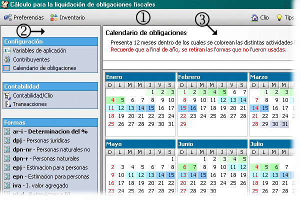

Comenzando
Al arrancar su aplicación se presenta la ventana principal. En ella se distinguen:

- Barra de herramientas: contiene las opciones de preferencias, inventario y opciones generales de ayuda.
- Barra de acceso rápido: Agrupa los accesos directos que usara con mas frecuencia en el trabajo diario. De acuerdo a sus funciones, las opciones se encuentran agrupadas en:
- Configuración Agrupa las opciones cuyos valores son básicos para el inicio de las actividades dentro del sistema.
- Contabilidad Agrupa las opciones que conforman la interfaz contable. Estas opciones habilitan al usuario a relacionar cuentas contables con secciones dentro de una o mas formas. De esta manera, el usuario experto invierte una cantidad de tiempo en establecer relaciones entre su contabilidad interna y la aplicación, para así, solo con la carga de movimientos contables, se esta en capacidad de realizar una declaración fiscal solo asignando una forma determinada al contribuyente, el sistema desglosa y verifica todas las transacciones, realiza los cálculos correspondientes y presenta la forma ya lista para la impresión.
- Formas Agrupa todas las formas fiscales incluidas dentro de esta aplicación.
- Cuando se selecciona una opción de la barra de acceso rápido, se presenta al lado derecho la interfaz de entrada para gestionar la información relacionada con esta opción. Si desea trabajar con otra opción solo haga clic sobre ella y sus componentes asociados aparecerán aquí.
Supongamos que seleccionamos unidades tributarias desde la barra de acceso rápido. Esto mostrara la interfaz que le permite manejar lo referente a las unidades tributarias. Como se muestra a continuación, la componen los siguientes elementos:
- Panel con una breve descripción o información relacionada con la interfaz de entrada.
- Línea de mensajes. Cualquier comunicación que la aplicación quiera hacer llegar al usuario se presenta en esta línea.
- Barra de herramientas con las opciones que aplican a la lista o a un elemento de esta. Cuando una acción dentro de la barra de herramientas aplica solo a un elemento de la lista (Ej.: editar) esta se activa solo cuando algún elemento de la lista ha sido seleccionado.
- Lista con los elementos ya creados en la base de datos